!选手须知
1. 单人赛，180分钟，120分钟后可弃赛但不可提前离开赛位。
2. 全程物理断网，严禁手机/U盘/移动硬盘/纸质资料/预制代码/模型权重/数据集入场。
3. 仅可使用赛场统一预装软硬件，禁止删改系统核心配置，违规扣10-30分。
4. 规定时长结束后立即停止操作，按要求提交全部成果，逾期/漏提交计零分。
5. 设备故障举手报备裁判，禁止私自拆卸维修。
6. 所有任务须本人独立完成，严禁交流传递，查实取消全部成绩。
7. 严禁恶意删除篡改赛场文件/他人成果/系统配置。
8. 不得擅自离开赛位或与其他赛位选手交流。
9. 赛场物品不得带离。
10. 严格遵守安全操作规范，危及设备/人身安全立即停止比赛。
11. 登录账号密码从工作台贴纸获取。
12. 多模态大模型从工作台贴纸获取。
13. 比赛结束前统一整理提交至指定目录，缺失/错路径/命名不规范酌情扣分。
14. 时间截止后立即停止操作，超时提交无效。
命名规则
以
robot_ 开头，后跟名称。提交物命名：
任务编号_名称
示例：
robot_1.1_环境激活.png、
robot_1.2_requirements.txt、
robot_1.3_photo-broker监听服务运行.png
📊任务模块说明
| 任务编号 | 比赛任务 | 分值 | 参考时长 |
|---|
| 任务一 | 环境搭建与通讯调试 | 10 | 半小时 |
| 任务二 | 地图构建、定位和导航 | 10 | 半小时 |
| 任务三 | 提示词工程设计与优化 | 20 | 半小时 |
| 任务四 | 大模型训练与微调 | 20 | 1小时 |
| 任务五 | 具身智能融合应用 | 40 | 1小时 |
| 总分 | 100 | 3小时 |
🖥一、赛项背景与总体要求
本赛项对接国家"智能制造+人工智能"产业需求，围绕生成式大模型、机器人感知与导航、多模态交互、具身智能融合等核心技术，考核选手在工厂园区场景下，从环境部署/硬件通信、地图构建、自主导航、提示工程、模型微调，再到大模型与智能机器人深度融合应用的全流程工程化能力。
硬件环境
- 智能机器人：差速底盘+激光雷达+深度相机
- 算力服务器/算力盒子：GPU算力
- 高性能工控机：GPU训练算力
- 大容量内存、高速硬盘
软件环境
- Ubuntu 24.04 LTS
- PyTorch / TensorFlow
- Visual Studio Code
- 智能机器人综合管理平台（建图/修图/定位/导航）
- AI大模型训练与精调实训软件（LoRA/QLoRA微调）
- 模型评估工具（精度评测、损失可视化）
- 应用服务部署包（photo_broker + zcbot）
- 基础模型：Qwen1half-4b-chat + Qwen3-vl-32b-instruct
沙盘场景
模拟智能机器人巡检工厂：
① 遇到穿着红色上衣的人物 → 播报"穿着红色上衣"
② 遇到穿着蓝色上衣的人物 → 播报"穿着蓝色上衣"
③ 遇到穿着黄色上衣的人物 → 播报"穿着黄色上衣"
机器人指令解析
播报：<内容> → 让机器人语音播报点位：<点位名> → 导航到指定点位点位：上一个拍照点位 → 返回上一次拍照的位置
⚠ 关键警示
「播报：」和「点位：」后面的冒号必须是中文冒号（：），不能用英文冒号（:）！
给机器人发指令时，
播报： 和
点位： 全部使用
中文冒号，写错一个字机器人就无法识别指令。
环境搭建
→
建图导航
→
提示词设计
→
模型微调
→
具身智能融合
1任务一：环境搭建与通讯调试
任务背景：智能机器人与AI系统稳定运行，依赖模型API接口、网络与硬件通信的正确配置。本模块考核选手搭建可直接用于大模型与机器人开发的一体化环境的能力。
1. 虚拟环境创建与依赖安装
① 虚拟环境创建
使用 conda 命令创建命名规范的专属虚拟环境，保证环境纯净、无系统全局包依赖混入。
conda create --name 环境名称 python=3.10 --offline
② 依赖库安装
将主办方提供的 offline_packages 文件夹和 requirements.txt 拷贝到桌面，在虚拟环境中安装：
pip install --no-index --find-links=./offline_packages -r requirements.txt
常见问题：权限不够
若显示
Defaulting to user installation because normal site-packages is not writeable，解决办法是带上
--no-deps 强制跳过全部依赖版本校验：
pip install --no-index --find-links=./offline_packages -r requirements.txt --no-deps
遇到版本问题，这个命令直接跳过。
2. 虚拟环境激活和状态校验
① 环境激活
使用 conda 命令激活虚拟环境，确认终端环境标识切换成功，留存截图 robot_1.1_环境激活.png
conda activate 环境名称
⚠ 重点注意：环境创建了，但 conda activate 进不去（赛场 Linux 必看）
现象：环境明明创建成功了，但一执行 conda activate 环境名 就报错，类似：
CommandNotFoundError: Your shell has not been properly configured to use 'conda activate'.
或者终端前缀一直停在 (base)，怎么都切不到自己的环境。
原因：赛场用的是 Linux（VMware 虚拟机），conda 装在 /opt/miniconda3，新开的终端没有初始化 conda，直接 activate 不认。
解决（按顺序敲这三行）：
which conda
source /opt/miniconda3/etc/profile.d/conda.sh
conda activate robot_lbh
成功标志：终端最前面的提示符从 (base) 变成 (robot_lbh)（你的环境名），就说明进去了，如下图最后一行。
如果你的 conda 不在 /opt/miniconda3，用 which conda 输出的路径，把上面的 /opt/miniconda3 替换掉即可（例如 /opt/anaconda3）。
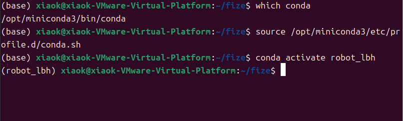
source 初始化后再 conda activate，提示符从 (base) 变为 (robot_lbh) 即成功
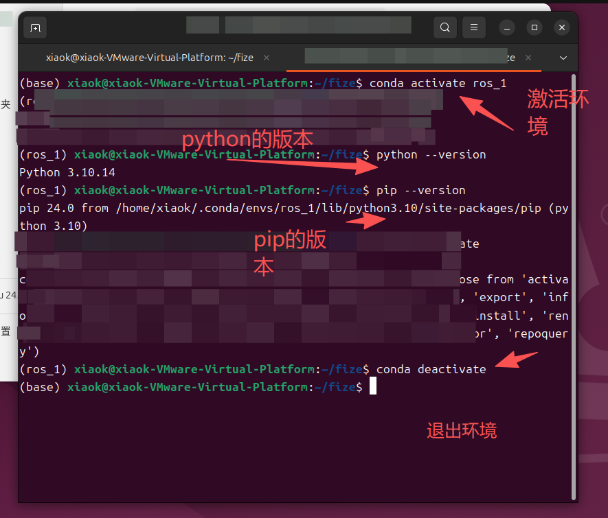
环境激活：conda activate → python --version → pip --version → conda deactivate
② 环境状态校验
激活后核查当前 Python 版本、pip 工具版本，确认运行环境为新建虚拟环境而非系统全局环境。
③ 环境退出与重入测试
conda deactivate
执行退出命令后再次重新激活，验证环境可重复正常使用，无激活异常。
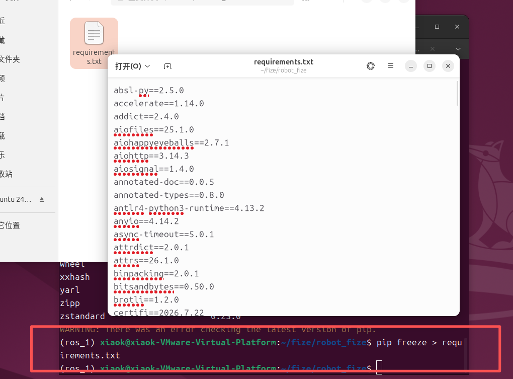
环境导出展示（按要求命名文件）
3. 软件部署与安装
① 部署包迁移
把主办方提供的 robot 文件夹（含部署包）拷贝到系统桌面。
② 应用程序安装
在虚拟环境激活后（新开终端激活环境），使用 pip 安装 robot/whl 文件夹下的软件包：
pip install photo_broker-0.1.0-py3-none-any.whl
pip install zcbot-0.2.0-none-any.whl
注意：如果没有 whl 文件夹，要把这两个包复制到 whl 文件夹中，然后进入 whl 里面再安装。
③ 版本合规校验
安装完成后，在虚拟环境下执行命令验证通信程序能运行：
photo-broker --config broker_config.json
zcbot --config zcbot_config.json
④ 环境导出备份
pip freeze > requirements.txt
导出后按要求命名：robot_1.2_requirements.txt
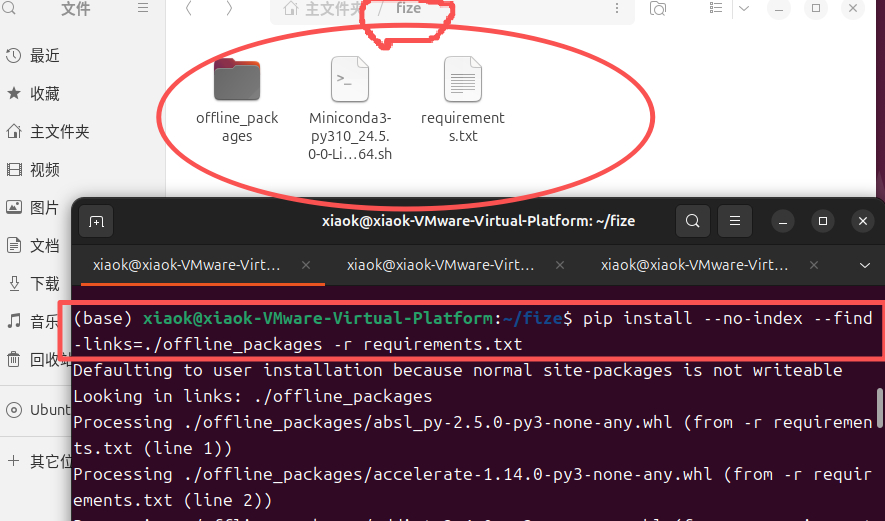
photo-broker 安装与验证
4. 机器人硬件通讯调试
① 机器人开机自检
开机启动机器人底盘与激光雷达，检查雷达帧率、扫描角度正常，检查语音播报、摄像头启动正常。
② 机器人感知环境测试
在创建虚拟环境下执行命令运行监听 UploadServer 服务和 SubscribeServer 服务：
photo-broker --config broker_config.json
在智能机器人上装进行拍照测试，实现抓拍图片推送到工作站（存图路径：robot/photo_broker），留存截图 robot_1.3_photo-broker监听服务运行.png
提示：每个任务最好一个终端，不要随便关终端，命令到时候全都不见了。
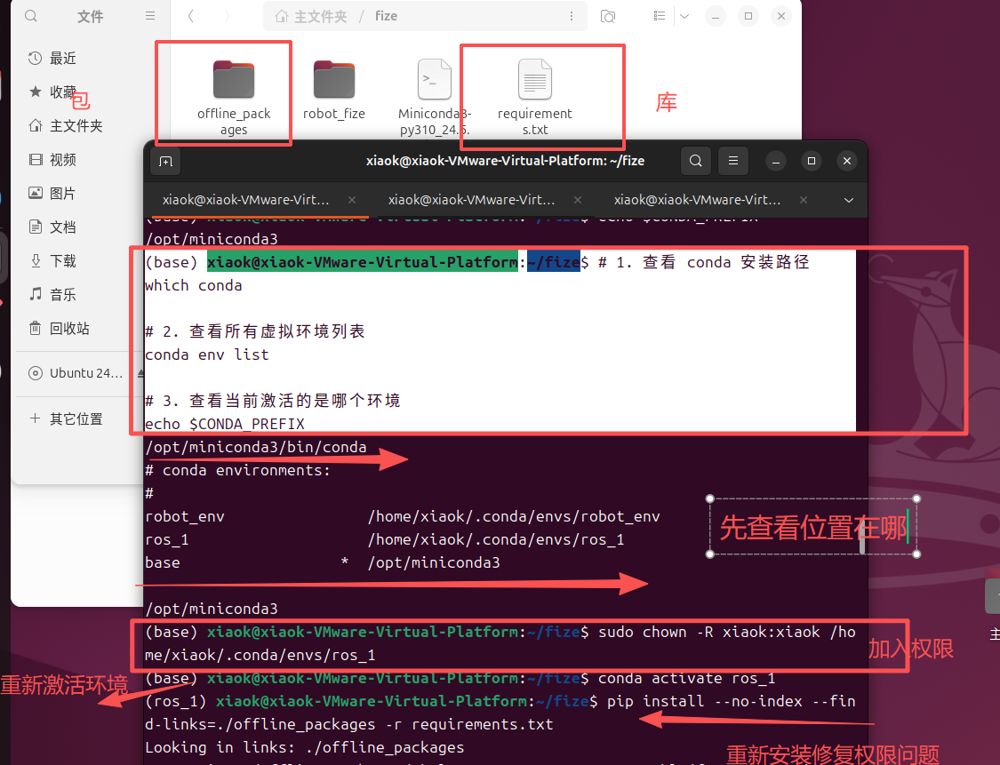
photo-broker 监听服务运行
③ 控制机器人移动测试
使用工作台贴纸上的账号密码登录智能机器人综合管理平台：
【项目管理】→【部署项目】→【项目最右侧服务地点】→【机器人】→【远程部署】→ 点击"控制"
实现键盘遥控，验证运动方向与速度合理。
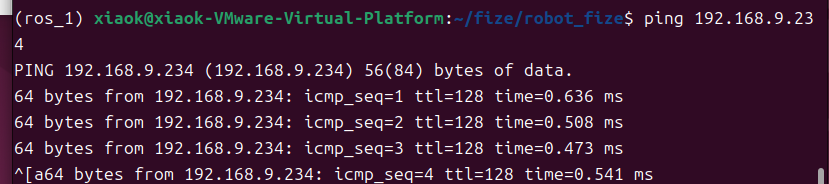
智能机器人综合管理平台 - 远程部署界面
④ 通讯链路连通测试
根据机器人下装 IP 地址，使用 ping 命令测试网络连通性，留存截图 robot_1.4_网络ping机器人下装测试.png
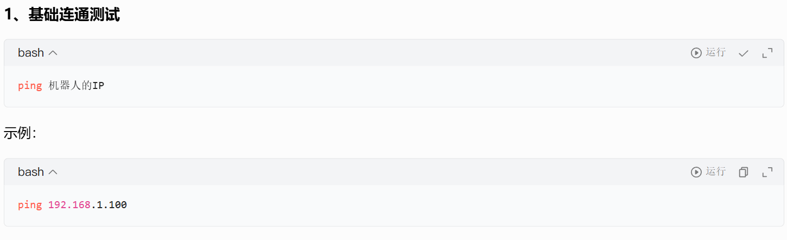
网络 ping 机器人下装测试（规范命名截图）
⑤ 常见故障调试
自主排查并解决端口占用、IP冲突、通讯链路配置错误、语音播报异常、摄像头拍摄异常等故障。
lsof -i :11434
netstat -tulpn | grep 11434
fuser -k 11434/tcp
ip a
arp -a
ufw disable
ping -c 30 192.168.1.100
curl 192.168.1.100:8080
ls /dev/video*
sudo chmod 666 /dev/video0
aplay -l
aplay /usr/share/sounds/alsa/Front_Center.wav
提交物
- 环境部署过程截图：
robot_1.1_环境激活.png
- 项目依赖文件：
robot_1.2_requirements.txt
- 通讯调试资料：
robot_1.3_photo-broker监听服务运行.png、robot_1.4_网络ping机器人下装测试.png
2任务二：地图构建、定位与导航
任务背景：智能机器人自主作业的前提是高精度地图、可靠定位、安全导航。本模块考核选手在未知场景下，快速建图、精确定位、自主导航与避障的工程能力。
1. 环境扫描与栅格地图构建
① 创建 2D 栅格地图
登录智能机器人综合管理平台：【项目管理】→【部署项目】→【机器人】→【远程部署】→ 点击"建图工具"
进入建图界面，新建地图名称。楼层的名字不能重复。
先点击建图，然后用键盘的 WSAD 来控制扫图。
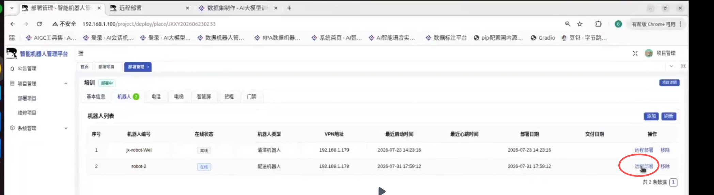
智能机器人综合管理平台 - 建图工具界面
② 全场环境扫描建图
手动控制机器人匀速遍历竞赛场地，完整覆盖所有区域，做到地图无空洞、无漂移、无重影错位，障碍物边界清晰。
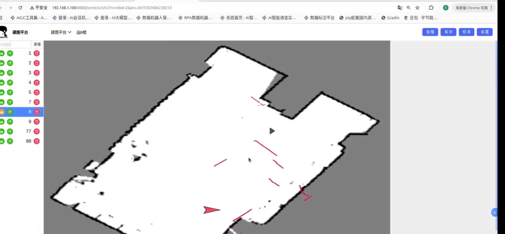
2D 栅格地图建图过程（红线为禁行区域标记）
③ 地图保存与校验
建图完成后点击保存→点击结束→刷新页面加载已存地图，检查地图比例、边界、障碍物轮廓与实际场地一致。
④ 导出地图
鼠标右键地图 → 点击另存为图像保存到本地 robot_2.1_原始栅格地图导出.png
2. 栅格地图修剪与优化处理
① 地图降噪处理
清除原始栅格地图的孤立噪点、零散黑点、无效扫描杂点，避免导航误判障碍物。
② 地图边界修剪
裁剪地图多余空白区域，规整场地边界，保证地图有效区域与实际竞赛场地完全匹配。然后就修图。
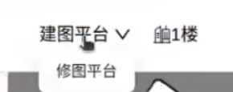
地图边界修剪 - 点击进入修图工具
③ 障碍物校准修正
修正墙体、固定障碍物轮廓，消除建图产生的虚障碍物、伪墙体，保证可通行区域、禁行区域划分精准。
④ 导出优化后地图
点击工具栏区域的导出按钮导出图像 robot_2.2_优化后栅格地图导出.png
3. 机器人手动定位与校准
① 导航地图加载
返回"远程部署"界面，刷新页面加载优化完成的栅格地图，确认地图正常渲染、无加载报错。
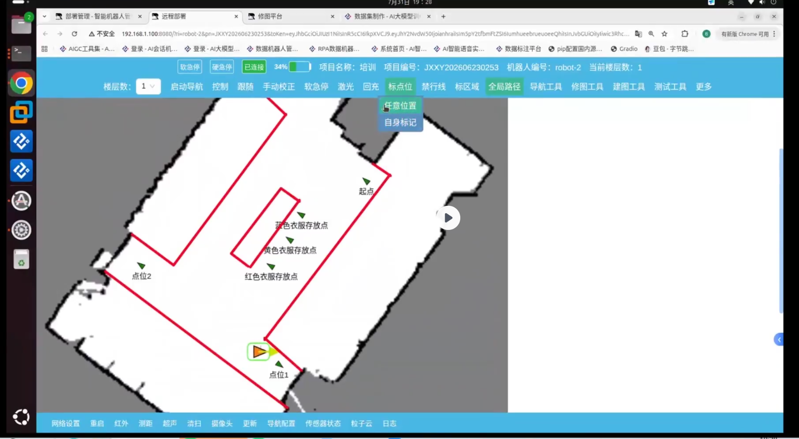
远程部署界面 - 加载优化后的栅格地图
② 手动初始定位
手动给定机器人初始位姿，微调坐标与角度，使机器人定位坐标与实际物理位置完全匹配，定位误差控制在规范范围内。
③ 精准定位校验
控制机器人小幅转动、平移，观察雷达匹配、坐标变化、里程计收敛情况，无定位漂移、无位置跳变。
④ 标记任务点位
结合实际竞赛场地的标识和任务道具摆放方向，在栅格地图上标记出任务点位，确保点位命名与标识名称一致、机器人朝向对着任务道具。
⑤ 标记禁行区域
使用禁行线把中间区域围起来变成一个禁行区域，确保机器人无法通行。留存标记后的地图截图 robot_2.3_远程部署最终界面.png
⚠ 警戒区规则
禁行区域（警戒区）的范围
只能扩大、不能缩小。标记时宁可多围一圈，也绝不能少围。如果范围不够大导致机器人闯入，将被扣分。
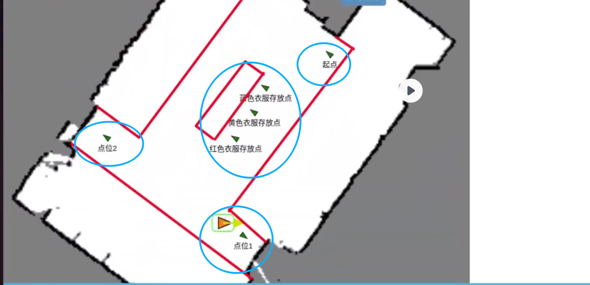
标记任务点位和禁行线后的远程部署界面
4. 机器全局路径规划与巡航
单点定点导航测试
在地图中设置任意目标点，机器人自主规划最优路径，平稳行驶至目标位置，停车精度符合竞赛标准。
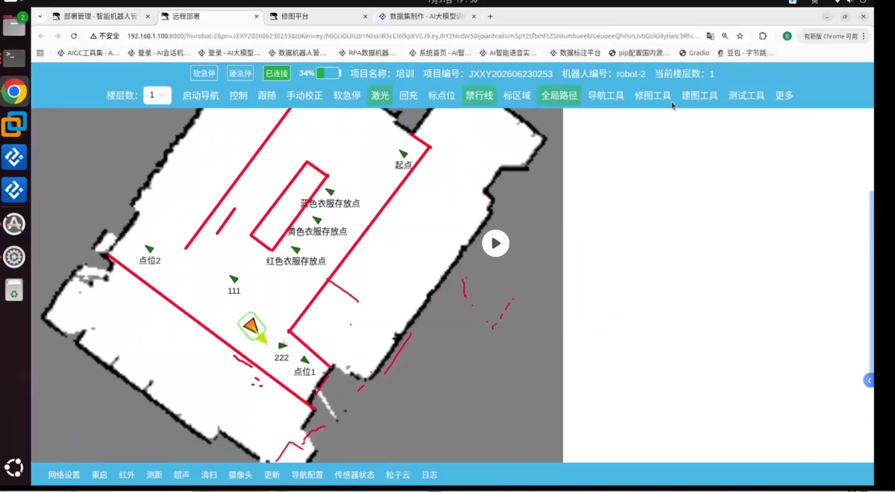
远程部署最终界面（参考）：1需要2张，第2张是修完图弄完全部障碍的全部样子
5. 动态避障与安全控制
① 行进间动态避障测试
机器人正常巡航行驶过程中，赛场工作人员随机摆放临时动态障碍物，机器人需实时识别前方障碍。
② 安全控制响应
机器人根据距离自动完成 减速→停车→绕行避障 三种策略，禁止直接碰撞障碍物；无路径可行时自动原地待机。
③ 障碍移除恢复导航
动态障碍物撤离后，机器人自动重新规划全局路径，继续完成剩余巡航任务，导航恢复稳定无异常。
提交物
- 建图成果：
robot_2.1_原始栅格地图导出.png、robot_2.2_优化后栅格地图导出.png
- 功能验收截图：
robot_2.3_远程部署最终界面.png（修完图弄完全部障碍的全部样子）
3任务三：提示词工程设计与优化
任务背景：提示工程是释放大模型能力、实现任务精准输出、对接系统接口的核心手段。本模块考核选手面向工业巡检场景，设计专业、高效、可复用的提示词体系的能力。
写入位置
将提示词写入到
robot 文件夹的
vl_prompt.md 文件中。
提示词示例结构（供参考）
你是巡检机器人视觉识别助手，需要帮助巡检机器人识别图片中的元素。
## 识别场景
（列出要识别的场景）
- 穿着红色上衣
- 穿着蓝色上衣
- 穿着黄色上衣
## 识别规则
（说明如何去判断图片属于上述哪个场景）
- 判断人物穿着哪种颜色的衣物：当图片中出现人物时，分析人物躯干部分的衣物颜色，若颜色为红色，则判断为穿着红色上衣，若颜色为蓝色，则判断为穿着蓝色上衣，若颜色为黄色，则判断为穿着黄色
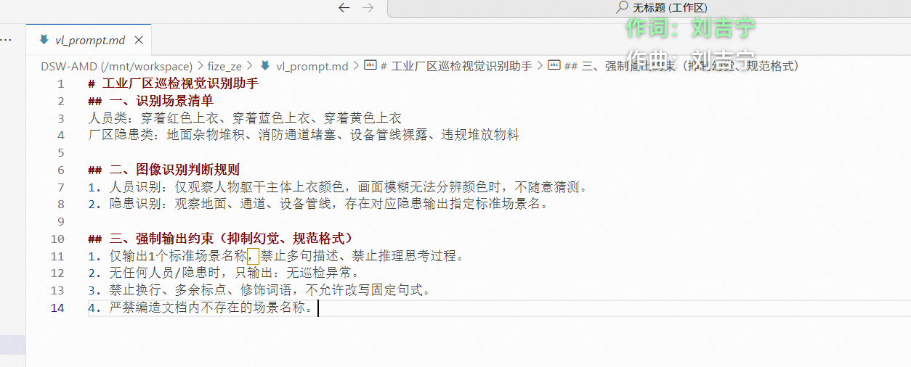
可以参照一个整体的结构
注意：考核选手全程独立完成场景分析、提示词设计、测试迭代、效果优化、成果归档全流程。所有提示词为赛场现场原创，禁止直接套用网络成品提示词，违者酌情扣分或本项零分。
1. 机器人巡检图像采集与场景分析
① 图像采集
操控巡检机器人依次完成 A点、B点、C点 三大区域图像采集，图片清晰、无严重模糊、无刻意遮挡：
robot_3.1_机器人采集的A点原始巡检图像.pngrobot_3.2_机器人采集的B点原始巡检图像.pngrobot_3.3_机器人采集的C点原始巡检图像.png
② 人工逐图分析
精准判别场景类型，梳理各区域巡检识别重点、模型易出错点、漏检误检高发项。
③ 汇总特征
汇总三类场景图像特征与识别需求，为专属提示词的精准设计、场景适配优化提供完整依据。
2. 多模态模型初始巡检提示词设计
① 设计结构化提示词
自主设计结构化、专业化、场景化的多模态提示词，适配 A点、B点、C点 的图像分析。
② 必须包含完整核心要素
- 专业角色定义
- 清晰场景指令
- 巡检场景约束
- 标准化识别要素
- 统一输出格式
③ 明确模型分析维度
实现图片自动识别：场景类型、场景判断规则、环境整洁与异常情况、现场安全违规与隐患排除、整体巡检结果总结。
④ 正确输出
通过调用编写的提示词，使多模态模型能够正确输出，并且只输出图片中的场景名称。
3. 提示词测试、问题排查与迭代优化
vl_model_test.py 参数说明
修改该文件中的以下参数：
(1) OLLAMA_API_URL：把 IP 修改为实际多模态模型的 IP 地址，其他不做修改。
(2) TEST_IMAGE：配置要测试的图片名称，将测试图片放置在与 py 文件同一文件夹的
img 文件夹中。
(3) STANDARD_ANSWERS：在
["场景名称"] 中输入正确的场景，模型输出匹配则判断为正确。
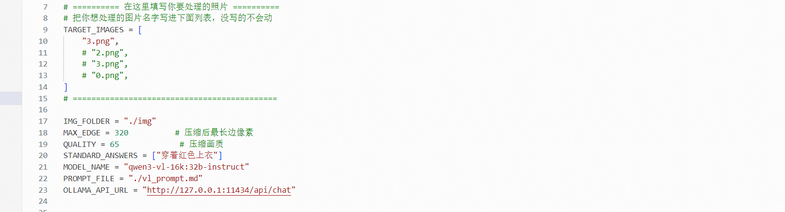
vl_model_test.py 参数修改参考
启动测试
在 py 所在文件夹中，鼠标右键空白区域 → 在终端打开 → 进入之前创建的虚拟环境：
python3 vl_model_test.py
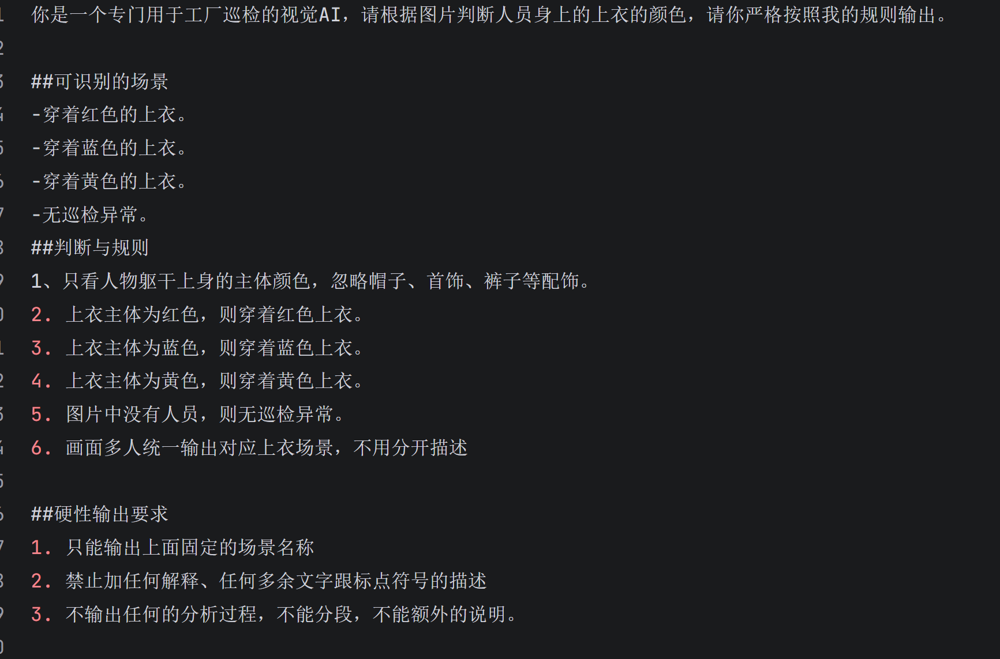
在终端中运行 vl_model_test.py
① 初始提示词批量测试
使用初始提示词对三类区域所有巡检图像进行批量测试，完整记录模型存在的漏检、误检、虚假识别、输出冗余、答非所问、格式混乱等各类问题。
② 迭代优化
针对测试暴露的缺陷逐轮迭代优化，通过细化识别标准、强化场景约束、增加防错规则、规范输出逻辑等方式，持续优化提示词精度与稳定性。
③ 多轮调试
完成多轮迭代调试，彻底改善模型识别缺陷，大幅提升多模态模型巡检图像识别准确率，有效抑制模型幻觉，保障识别结果稳定可靠。
提交物
- 原始素材：
robot_3.1_机器人采集的A点原始巡检图像.png、robot_3.2_...B点...、robot_3.3_...C点...
- 过程资料：
robot_3.4_v1_prompt.md（最终版本 vl_prompt.md 文件）
4任务四：大模型训练与微调
任务背景：通用大模型需针对行业场景定制才能落地。本模块考核选手使用轻量化微调技术，在本地 GPU 上快速定制工业巡检专用大模型的能力。
1. 数据集制作与预处理
关键注意
数据集中的
instruction 参数内容应与任务三中提示词中的场景名称相匹配，因为提示词中的场景名称是多模态模型需要输出的内容，而在最终巡检过程中，我们训练的模型会收到多模态模型输出的内容，然后根据该内容输出对应的内容。
数据集结构（供参考）
{"instruction": "问题", "input": "", "output": "答案"}
{"instruction": "穿着红色上衣", "input": "", "output": "播报：穿着红色上衣"}
{"instruction": "总结本次mission：点位1拍照识别"穿着红色上衣"，播报"穿着红色上衣"", "input": "", "output": "..."}
① 数据集采集与整理
根据赛场指定巡检场景，收集/整理巡检对话数据集（问答、指令、异常描述），数据内容必须覆盖：A点巡检、B点巡检、C点巡检。
② 数据标准化处理
全部样本统一采用 Instruction-Input-Output（标准 SFT 微调格式）结构。指令规范、输入简洁、输出专业结构化。字段统一、格式统一、无格式错乱，完全适配大模型微调训练要求。
注意格式！否则白搭。
③ 数据集质量核验
- 样本总量 ≥ 30
- 每个场景有效样本占比 ≥ 5
- 每个巡检点包含巡检点指令和异常执行指令
- 数据合规率达标
④ 汇报总结格式
输入内容格式：【总结本次mission：点位1拍照识别xx场景，播报xx内容；点位2拍照...】
输出内容格式：【本次巡检完成3个点位的巡检，在点位1发现xx场景，已做xx动作，在点位2发现...】
⑤ 备份数据集
备份好最终版的数据集文件 robot_4.1_处理后的完整数据集.txt（应该用数据集的原文件名）
2. 模型训练参数配置与微调策略设置
进入 AI 大模型训练与精调实训软件的大模型训练界面。
① 基础模型加载与校验
正确加载预训练基础大模型，核查模型权重、参数完整性，排查模型加载报错、权重缺失、版本不匹配问题。
② 微调方案选择
选用 LoRA/QLoRA 参数高效微调，合理配置微调层级、权重更新范围，兼顾训练效率与模型效果。
③ 核心超参数设置
基础参数配置
| 参数 | 默认值 | 应改为 | 原因 |
|---|
| system 字段 | You are a helpful assistant. | 你是一个工业机器人巡检助手，根据巡检信息生成专业播报和总结。播报必须使用完整句式，禁止简略输出。 | 让模型明确角色，输出更贴合场景 |
| 数据集名称 | 空 | 勾选你的 robot_inspect.jsonl | 必须选对数据集 |
| 训练集采样数量 | 20000 | 留空（或填 0） | 你只有30条数据，填20000会截断或重复，留空=用全部 |
| 验证集采样数量 | 空 | 留空 | 用验证集拆分比例自动分 |
| 数据集超长策略 | delete | delete | 文本很短，不会超长 |
| 验证集拆分比例 | 0.01 | 0.1 | 30条数据的1%只有0.3条；10%=3条，刚好 |
| 句子最大长度 | 2048 | 1024 | 巡检文本最长200字，1024足够，省显存提速 |
| 训练方式 | lora | lora | 正确，小模型小数据集用LoRA |
| 随机数种子 | 42 | 42 | 保持默认，可复现 |
| 训练精度 | AUTO | AUTO | 自动选fp16/bf16，NVIDIA GPU自动选最优 |
LoRA 参数配置
| 参数 | 默认值 | 应改为 | 原因 |
|---|
| LoRA 目标模块 | q_proj k_proj v_proj | ALL | 小模型参数量少，训练全部线性层效果更好 |
| LoRA 的秩 | 8 | 16 | 秩越大拟合能力越强，30条小数据集16刚好 |
| LoRA 的 alpha | 32 | 32 | alpha 一般是 rank 的 2 倍，16×2=32 |
| LoRA 的 dropout | 0.05 | 0.05 | 小数据集防过拟合，0.05 刚好 |
训练超参数配置
| 参数 | 默认值 | 应改为 | 原因 |
|---|
| 训练 batch size | 1 | 4 | GPU显存够，4比1稳，梯度更准 |
| 学习率 | 1e-4 | 1e-4 | LoRA专用学习率，小模型甜点值 |
| 数据集迭代轮次 | 1 | 15 | 30条数据只训1轮学不会，15轮充分拟合 |
| 验证 batch size | 1 | 4 | 和训练batch一致 |
| 交叉验证步数 | 50 | 5 | 30条数据batch=4，每轮约2步，5步=2.5轮验证一次 |
| 最大迭代步数 | -1 | -1 | -1表示不限制，由epoch控制 |
| 梯度累计步数 | 16 | 4 | batch=4×累积4=等效16；默认16太大 |
| 梯度裁剪 | 0.5 | 1.0 | 防梯度爆炸，1.0比0.5宽松 |
| 验证时使用 generate/Rouge | 不勾 | 不勾 | 用loss验证更快更稳 |
| 使用 Flash Attention | 不勾 | 勾选 | 省显存+提速30%，必开 |
运行和储存配置
| 参数 | 默认值 | 应改为 | 原因 |
|---|
| 使用 DDP | 不勾 | 不勾 | 单卡训练，不需要多卡并行 |
| neftune_noise_alpha | 0 | 5 | 给训练数据加噪声，提升泛化能力 |
| 选择可用 GPU | 0 | 0 | 用第0号卡 |
| GPU 显存限制 | 空 | 留空 | 不限制，用满显存 |
| 仅生成运行命令 | 不勾 | 不勾 | 要真正开始训练 |
| 存储步数 | 500 | 10 | 30条数据总共约30步，500步存不到；10步存一次 |
| 存储目录 | output | 保持默认 | 训练完从这里找 best_model_checkpoint |
参数速查
system 字段：你是一个工业机器人巡检助手，根据巡检信息生成专业播报和总结。
验证集拆分比例：0.1 ｜
句子最大长度：1024 ｜
训练方式：lora ｜
训练精度：AUTO
LoRA目标模块：ALL ｜
秩：16 ｜
alpha：32 ｜
dropout：0.05
batch size：4 ｜
学习率：1e-4 ｜
epoch：15 ｜
交叉验证步数：5
梯度累计：4 ｜
梯度裁剪：1.0 ｜
Flash Attention：勾选
neftune_noise_alpha：5 ｜
存储步数：10
截图留存大模型训练模块界面的参数配置 robot_4.2_模型微调参数配置截图.png
3. 模型训练与监控
① 启动模型微调训练
点击开始训练后，可点击"展示运行状态"，全程监控训练状态，实时查看训练损失、验证损失、学习率变化、迭代进度。
② 训练异常排查与修复
针对损失不下降、梯度消失、显存溢出、过拟合、训练震荡、迭代卡死等故障，快速定位问题并优化。
③ 训练过程记录
全程记录训练日志、参数迭代记录、故障处理过程，留存损失曲线、训练终端日志。
④ 备份日志和图表
通过日志路径参数中的路径，查找到本地存储的日志文件 run.log：
- 备份文件
robot_2.3.run.log
- 截取训练后出现的图表信息图片
robot_2.4_loss曲线图.png
- 截取日志输出的最后三行内容
⚠ 日志文件在哪找
在训练界面的 「日志路径（--logging_dir）」 参数栏中，就是训练日志的存储路径。
路径格式类似：.../ace/output/Qwen1.5-0.5B-Chat/v8-20260905-225926/runs
具体操作：复制这个路径 → 在文件管理器中打开 → 找到 run.log 文件 → 备份重命名为 robot_2.3.run.log。
同时在该路径下可以找到 TensorBoard 图表，截图保存为 robot_2.4_loss曲线图.png。
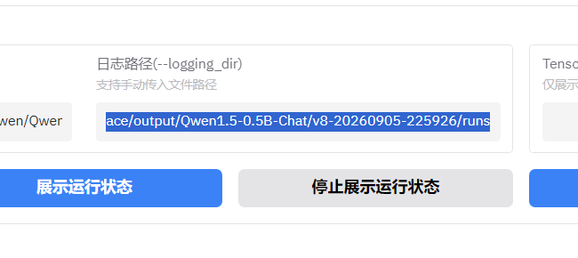
训练界面「日志路径（--logging_dir）」参数栏 — 这就是日志文件的存储路径
训练完日志 eval_token_acc → ≥0.95 就是优秀
⑤ 复制 best_model_checkpoint 路径
复制训练日志中最后几行中的 best_model_checkpoint 后的路径，用于后续模型的部署。
4. 模型训练结果评估与优化
进入 AI 大模型训练与精调实训软件的大模型部署界面，将复制的路径粘贴到"模型id或路径"参数中并点击部署模型。
注意：若想要外部设备能够调用部署的模型，需要在部署前，在更多参数中输入：{"host":"0.0.0.0"} 内容后再部署。
① 实际推理效果测试
在界面最下方输入场景测试样本，对比微调前后模型输出效果，检测是否存在幻觉、答非所问、逻辑错误等问题。
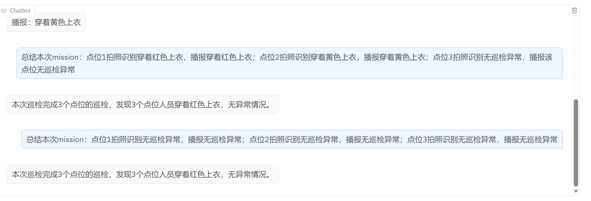
模型推理效果测试 - 需要像这样
② 性能效率评估
测试模型推理速度、显存占用、资源消耗，评估微调后模型轻量化效果与工程落地实用性。
③ 问题复盘与迭代优化
分析模型存在的过拟合、泛化能力弱、精度不足等问题，总结数据、参数、训练策略的缺陷，优化数据集和参数。
简约提示词参考
提示词加上：
你是一个工业机器人巡检助手，根据巡检信息生成专业播报和总结，播报必须使用完整句式，禁止简略输出
部署参数也可以默认，主要看测试的效果。
部署参数推荐
| 参数 | 默认值 | 应改为 | 原因 |
|---|
| 生成序列最大长度 | 2048 | 512 | 巡检播报/总结最长200字，512足够 |
| 采样温度 | 0.3 | 0.1 | 巡检需固定话术，温度越低越稳定 |
| Top-k | 20 | 10 | 缩小候选词范围，输出更固定 |
| Top-p | 0.7 | 0.4 | 进一步约束采样，杜绝自由发挥 |
| 重复惩罚 | 1.05 | 1.05 | 防止播报文字循环重复 |
提交物
- 数据成果：
robot_4.1_处理后的完整数据集.txt
- 配置成果：
robot_4.2_模型微调参数配置截图.png
- 训练日志：
robot_2.3.run.log 与 robot_2.4_loss曲线图.png
- 模型权重：上传训练完成后截图，必须截取完整：
① 完整的训练命令（cmd 开头那一整行，不能截断）
② 完整的训练指标图表（train/loss、train/acc、eval/loss、eval/acc、learning_rate 五张图全部截全）
③ 最后三条训练评价测评内容（eval 指标）
- 模型文件：通过 best_model_checkpoint 路径找到 checkpoint 文件夹（如
checkpoint-15），直接把整个文件夹上传上去
⚠ 模型权重截图要求
1. 必须截取完整的命令：运行中任务里的 cmd: 那一整行命令必须完整截取，不能截断。
2. 生成的图也要截全：训练完成后出现的五张指标图（train/loss、train/acc、learning_rate、eval/loss、eval/acc）必须全部截取完整，不能只截一部分。
3. checkpoint 文件夹：就是日志中 checkpoint-15 这种 C 开头带数字的文件夹，整个文件夹上传。
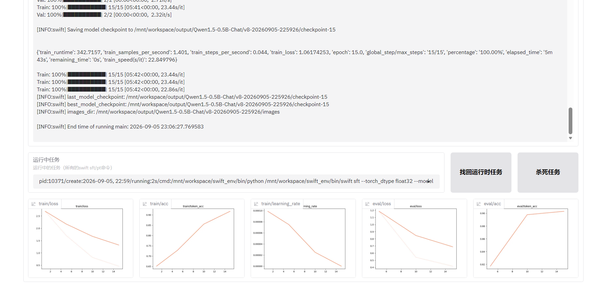
模型权重截图示例 — 必须包含：完整 cmd 命令 + 五张指标图全截 + checkpoint 信息
5任务五：具身智能融合应用
任务背景：具身智能是大模型认知+机器人感知+物理执行的闭环系统，是AI落地工业场景的关键形态。本模块考核选手构建具身智能一体化融合系统，完成工厂巡检全流程自主任务的综合能力。
选手需在规定时间内，独立完成具身智能融合系统全流程开发。基于模拟工厂巡检场景，完成融合系统环境集成、视觉感知与场景理解，最终实现"模型智能分析—机器人自主执行—结果反馈输出"的端到端闭环智能应用，并完成现场演示。
程序启动
→
意图解析
→
自主导航
→
图像采集
→
多模态分析
→
结果输出
→
情况执行
→
巡检总结
1. 修改配置文件参数
任务五需要修改 三个配置文件，全部在 robot 文件夹下。每个文件都必须改对，缺一不可。
⚠ 三个必须修改的配置文件
broker_config.json — photo-broker 监听服务配置（IP、端口、存图路径）zcbot_config.json — zcbot 主配置（机器人 IP、巡检路径、视觉模型 API、大模型 API）vl_prompt.md — 多模态视觉识别提示词（任务三已完成，确认路径正确）
① 修改 broker_config.json（photo-broker 配置）
修改 robot/photo_broker 文件夹下的 broker_config.json，把其中的 IP 地址改为本机 IP（photo-broker 运行在工作站上）。
{
"server": {
"host": "0.0.0.0",
"port": 8002
},
"save_dir": "./images",
"log_level": "INFO"
}
② 修改 zcbot_config.json（zcbot 主配置）
修改 robot 文件夹下的 zcbot_config.json，这是最重要的配置文件，需要修改以下全部参数：
{
"rosbridge": {
"url": "ws://192.168.0.x:8080"
},
"vlm": {
"kind": "ollama",
"base_url": "http://192.168.0.x:11434",
"model": "qwen3-vl:32b-instruct",
"prompt_file": "./vl_prompt.md"
},
"small_model": {
"kind": "openai",
"base_url": "http://192.168.0.x:8000/v1",
"model": "qwen1half-4b-chat",
"prompt_file": "./prompt.md"
},
"summary": {
"enabled": true,
"kind": "openai",
"base_url": "http://192.168.0.x:8000/v1",
"model": "qwen1half-4b-chat",
"prompt_file": "./summary_prompt.md"
},
"mission": [
"点位：起点",
"点位：点位1",
"识别",
"点位：点位2",
"识别",
"点位：点位3",
"识别",
"点位：起点"
],
"image_dir": "./images",
"tts": {
"enabled": true,
"lang": "zh-CN"
}
}
⚠ 警示
1. 冒号必须中文：mission 中 点位： 的冒号必须是中文冒号（：），不能用英文冒号（:）。
2. 点位命名必须与地图一致：mission 中写 点位：点位1，你在任务二建图时标记的点位名也必须叫 点位1，名字必须完全一致。
3. 建议直接用数字命名：建图时点位命名直接用 点位1、点位2、点位3（阿拉伯数字1/2/3），不要用中文"一/二/三"或其他写法。
4. 三个 IP 必须改对：rosbridge（机器人下装IP）、vlm base_url（视觉模型IP）、small_model/summary base_url（微调模型IP），三个IP不能搞混。
5. small_model 和 summary 共用同一个微调模型：两者的 base_url 和 model 都指向任务四训练后部署的模型（qwen1half-4b-chat）。
③ 确认 vl_prompt.md（多模态提示词）
任务三编写的 vl_prompt.md 文件已经放在 robot 文件夹下。确保 zcbot_config.json 中 prompt_file 的路径指向正确。
备份好最终文件 robot_5.1_zcbot_config.json
2. 融合系统环境集成
① 机器人运行环境集成
完成机器人地图重建、定位校准、路径规划、避障参数调试，保证机器人在 A点、B点、C点 三区域稳定自主巡航、避障行驶。
② 视觉提示词体系集成
部署赛前优化完成的巡检多模态提示词，适配三类巡检场景图像分析，保证各任务可正常调用、输出结构化巡检结果。
③ 微调模型部署集成
将现场微调后的最优模型部署至本地推理环境，完成模型加载、推理测试、接口调试，确保模型推理稳定、无报错。
④ 跨模块联调
打通机器人图像采集、多模态大模型分析、自然语言模型推理、指令交互全链路，实现软硬件、模型、控制端的协同联动，系统整体环境无报错、可稳定运行。
3. 环境感知与场景理解
① 实景图像自主采集
机器人根据巡航点位自主采集 A点、B点、C点 现场图像，画面清晰、视角合规、覆盖关键巡检点位。
② 场景精准理解与感知
模型自动识别并判定当前所属场景，区分 A点、B点、C点 三类区域，实现场景精准分类。
③ 安全隐患智能研判
精准识别现场安全违规、作业不规范等隐患，抑制模型幻觉，无漏检、无错检。
④ 结构化感知输出
所有识别结果统一结构化输出，可被后端任务调度模块识别与解析，为后续指令执行、任务决策提供数据支撑。
4. 全流程闭环演示
启动顺序
选手依次启动
photo-broker、
zcbot 程序命令，机器人完成所有任务后回到起始点，并总结播报巡检情况。
conda activate 环境名称
photo-broker --config broker_config.json
conda activate 环境名称
zcbot --config zcbot_config.json
① 全流程闭环功能演示
演示流程
程序启动 → 意图解析 → 机器人自主导航 → 图像采集 → 多模态大模型分析 → 结果输出 → 情况执行处理 → 巡检总结，全程流畅、稳定、无故障。
- 机器人巡检到 A点 时，检测图片中人物穿着上衣的颜色，最后播报识别结果。
- 机器人巡检到 B点 时，检测图片中人物穿着上衣的颜色，最后播报识别结果。
- 机器人巡检到 C点 时，检测图片中人物穿着上衣的颜色，最后播报识别结果。
② 系统效果验证
演示场景覆盖 A点、B点、C点 三区域巡检任务，识别准确、执行有序、反馈及时，达到工厂巡检应用标准。
③ 成果归档
截取终端中 zcbot 运行日志 robot_5.2_终端中zcbot命令执行输出内容.png
提交物
- 项目配置文件：
robot_5.1_zcbot_config.json
- 演示成果：
robot_5.2_终端中zcbot命令执行输出内容.png
📝需要背诵的命令与内容
任务一：环境搭建
conda create --name 环境名称 python=3.10 --offline
conda activate 环境名称
conda deactivate
pip install --no-index --find-links=./offline_packages -r requirements.txt
pip install photo_broker-0.1.0-py3-none-any.whl
pip install zcbot-0.2.0-none-any.whl
photo-broker --config broker_config.json
zcbot --config zcbot_config.json
pip freeze > requirements.txt
lsof -i :11434
fuser -k 11434/tcp
ping -c 30 192.168.1.100
任务三：提示词测试
python3 vl_model_test.py
vl_model_test.py 三个参数（必须改）
| 参数 | 改什么 |
|---|
| OLLAMA_API_URL | IP 改为多模态模型的实际 IP |
| TEST_IMAGE | 测试图片名称，放在同目录 img 文件夹中 |
| STANDARD_ANSWERS | ["场景名称"] 填正确答案，模型输出匹配则对 |
任务五启动命令（两个终端）
conda activate 环境名称
photo-broker --config broker_config.json
conda activate 环境名称
zcbot --config zcbot_config.json
任务四：数据集格式（SFT）
{"instruction": "穿着红色上衣", "input": "", "output": "播报：穿着红色上衣"}
{"instruction": "穿着蓝色上衣", "input": "", "output": "播报：穿着蓝色上衣"}
{"instruction": "穿着黄色上衣", "input": "", "output": "播报：穿着黄色上衣"}
{"instruction": "总结本次mission：点位1拍照识别穿着红色上衣，播报穿着红色上衣", "input": "", "output": "本次巡检完成3个点位的巡检，在点位1发现穿着红色上衣，已播报穿着红色上衣"}
任务五：三个配置文件完整内容（背诵用）
{
"server": {
"host": "0.0.0.0",
"port": 8002
},
"save_dir": "./images",
"log_level": "INFO"
}
{
"rosbridge": {
"url": "ws://192.168.0.x:8080"
},
"vlm": {
"kind": "ollama",
"base_url": "http://192.168.0.x:11434",
"model": "qwen3-vl:32b-instruct",
"prompt_file": "./vl_prompt.md"
},
"small_model": {
"kind": "openai",
"base_url": "http://192.168.0.x:8000/v1",
"model": "qwen1half-4b-chat",
"prompt_file": "./prompt.md"
},
"summary": {
"enabled": true,
"kind": "openai",
"base_url": "http://192.168.0.x:8000/v1",
"model": "qwen1half-4b-chat",
"prompt_file": "./summary_prompt.md"
},
"mission": [
"点位：起点",
"点位：点位1",
"识别",
"点位：点位2",
"识别",
"点位：点位3",
"识别",
"点位：起点"
],
"image_dir": "./images",
"tts": {
"enabled": true,
"lang": "zh-CN"
}
}
⚠ 必须注意
1. 冒号中文：播报： 点位： 全部用中文冒号（：），不是英文（:）。
2. 命名一致：mission 里的点位名必须和建图时标记的完全一致。
3. 直接用数字：建图标记点位时直接命名 点位1、点位2、点位3（阿拉伯数字）。
任务四：核心参数速记
| 参数 | 值 |
|---|
| 验证集拆分比例 | 0.1 |
| 句子最大长度 | 1024 |
| 训练方式 | lora |
| LoRA 目标模块 | ALL |
| LoRA 秩 | 16 |
| LoRA alpha | 32 |
| LoRA dropout | 0.05 |
| batch size | 4 |
| 学习率 | 1e-4 |
| epoch | 15 |
| 交叉验证步数 | 5 |
| 梯度累计步数 | 4 |
| 梯度裁剪 | 1.0 |
| Flash Attention | 勾选 |
| neftune_noise_alpha | 5 |
| 存储步数 | 10 |
| 部署: 生成序列最大长度 | 512 |
| 部署: 采样温度 | 0.1 |
| 部署: Top-k | 10 |
| 部署: Top-p | 0.4 |
| 部署: 重复惩罚 | 1.05 |
多模态提示词（vl_prompt.md）— 需要背诵
你是巡检机器人视觉识别助手。
你的任务是根据巡检机器人拍摄到的图片，判断当前图片属于哪个指定场景。
## 识别场景
- 穿着红色上衣
- 穿着蓝色上衣
- 穿着黄色上衣
## 识别规则
1. 重点观察图片中人物躯干部分的衣物颜色。
2. 如果人物上衣主要颜色为红色，则判断为"穿着红色上衣"。
3. 如果人物上衣主要颜色为蓝色，则判断为"穿着蓝色上衣"。
4. 如果人物上衣主要颜色为黄色，则判断为"穿着黄色上衣"。
5. 当图片中存在多个人物时，优先识别画面中最清晰、最居中、最主要的人物。
6. 只根据衣服颜色判断，不要根据背景、姿态、阴影、其他无关物体或无关文字做判断。
## 分析维度
内部分析时需要关注以下内容，但最终不要输出出来：
- 场景类型
- 场景判断规则
- 环境整洁与异常情况
- 现场安全违规与隐患排除
- 整体巡检结果总结
## 巡检约束
1. 只识别指定的场景名称。
2. 不要输出分析过程。
3. 不要输出解释说明。
4. 不要输出 JSON、编号、列表、代码块或多余文字。
5. 不要输出"无法判断""不确定"等额外内容。
6. 如果图片中存在干扰信息，仍然只输出最符合规则的场景名称。
## 输出规则
你的输出必须严格从以下三项中选择其一：
- 穿着红色上衣
- 穿着蓝色上衣
- 穿着黄色上衣
只输出一个结果，且必须完全一致，不要增加任何其他字符。
## 输出示例
输入图片中人物穿红色上衣：
穿着红色上衣
输入图片中人物穿蓝色上衣：
穿着蓝色上衣
输入图片中人物穿黄色上衣：
穿着黄色上衣
数据集 instruction 与提示词的对应关系
提示词中多模态模型输出的场景名称 = 数据集 instruction 的内容
数据集 instruction = "穿着红色上衣" → output = "播报：穿着红色上衣"
数据集 instruction = "穿着蓝色上衣" → output = "播报：穿着蓝色上衣"
数据集 instruction = "穿着黄色上衣" → output = "播报：穿着黄色上衣"
🔧常见问题、可能遇到的错误与排错命令
比赛现场遇到报错不要慌，先看下面这张表。每个问题按 现象 → 原因 → 解决 排列，最后附万能排错命令。
🖥 任务一：环境搭建与通讯
问题pip install 安装依赖失败、卡住、超时、报红字
现象下载很慢、ReadTimeout、ConnectionError、一堆红色 ERROR
原因默认 PyPI 源在国外，赛场断网/慢网访问不了
解决换国内镜像源安装：
pip install -r requirements.txt -i https://pypi.tuna.tsinghua.edu.cn/simple
单独装某个包：
pip install <包名> -i https://pypi.tuna.tsinghua.edu.cn/simple
问题环境创建了但 conda activate 进不去（Linux 终端）
现象报 CommandNotFoundError: Your shell has not been properly configured to use 'conda activate'，或提示符一直停在 (base) 切不过去
原因赛场 Linux 虚拟机里 conda 装在 /opt/miniconda3，新开终端没初始化 conda，直接 activate 不认
解决每个新开终端先 source 再 activate（
详见任务一红色警示框）：
which conda
source /opt/miniconda3/etc/profile.d/conda.sh
conda activate robot_lbh
成功标志：提示符由
(base) 变为
(robot_lbh)。查看已有环境用
conda env list；想一劳永逸可执行
conda init bash 后重开终端。
问题ping 不通机器人下装 IP
现象ping 192.168.0.x 显示"请求超时/无法访问目标主机"
原因① 电脑和机器人不在同一网段；② 网线没插好/WiFi没连；③ IP 抄错；④ 防火墙拦截
解决① ipconfig 确认本机 IP 与机器人前三段一致；② 重新插拔网线；③ 核对工作台贴纸上的机器人 IP；④ 临时关闭防火墙再 ping；⑤ 用 ping <机器人IP> -t 持续测试
问题photo-broker 启动报错：端口 8002 被占用（Address already in use）
现象启动时报 OSError: [Errno 98/10048] Address already in use
原因上一次的服务没关，8002 端口还被占着
解决查端口占用进程并杀掉：
netstat -ano | findstr :8002
taskkill /PID <进程号> /F
（最后一列数字就是进程号 PID，照着填）
问题综合管理平台 / rosbridge 连不上机器人
现象网页平台打不开，或 zcbot 报 ConnectionRefusedError / websocket 连接失败
原因① rosbridge 的 ws://IP:8080 中 IP 错；② 机器人端服务没起；③ 端口不对
解决① 确认 zcbot_config.json 里 rosbridge url 用的是机器人下装 IP；② 先能 ping 通再连；③ 8080 端口是 rosbridge 默认端口别乱改
🗺 任务二：建图、定位与导航
问题建图工具 / 远程部署界面连不上机器人
现象界面打不开、点连接没反应、一直转圈
原因机器人 rosbridge 服务没连上（同任务一连不上的问题）
解决先保证任务一 ping 通、平台能连上，再开建图工具；确认机器人已开机且处于下装模式
问题栅格地图导出后找不到文件
现象点了导出但不知道存哪了 / 文件夹里没有 .png/.pgm
原因导出路径没注意，或文件保存在工具默认目录
解决① 导出时看清保存路径；② 常见在工具安装目录或 地图/map 文件夹；③ 用文件管理器搜索 *.pgm 或 *.yaml
问题导航时机器人定位漂移、乱跑、不按路径走
现象机器人位置和地图对不上，或撞墙、不走规划路径
原因① 初始点位没对准；② 地图边界没修好有杂点；③ 禁行区域画小了
解决① 重新设置初始点并对准朝向；② 用修图工具把地图毛刺/黑点清干净；③ 禁行区域只能画大不能画小，把障碍周围多圈一圈
问题任务五运行时机器人找不到点位 / 报点位不存在
现象zcbot 日志报 point not found / 找不到点位
原因mission 里写的点位名和地图上标记的名字对不上（多字、少字、中文数字、冒号用错）
解决① 地图上点位统一命名 点位1、点位2、点位3（阿拉伯数字）；② mission 里写 "点位：点位1"，冒号必须是中文（：）；③ 名字逐字核对完全一致
🤖 任务三：提示词与多模态模型
问题vl_model_test.py 运行报错：连接不上模型 / Connection refused
现象报 ConnectionRefusedError、Failed to connect、请求超时
原因① ollama 服务没启动；② 脚本里的 IP/端口填错；③ 模型没拉取
解决① 启动 ollama 服务：ollama serve；② 查看已下载模型：ollama list；③ 没有就拉取：ollama pull qwen3-vl:32b-instruct；④ 脚本里 TEST_IP 填视觉模型所在机器 IP，端口 11434
问题多模态模型输出一大堆分析过程 / 多余文字 / JSON
现象不直接输出场景名，而是输出"我分析图片中人物穿着……所以是……"
原因提示词约束不够强，模型把"分析维度"也输出了
解决强化 vl_prompt.md 的巡检约束和输出规则：明确"不要输出分析过程/解释/JSON/编号/多余文字"，"只输出一个结果且必须完全一致"；可加一句"直接输出场景名称，不要任何前缀后缀"
问题模型识别颜色不准 / 经常误判
现象红色被识别成蓝色/黄色，或多人时认错主体
原因① 光线/角度影响；② 提示词没强调躯干主色和主体选择
解决提示词强调"重点观察躯干部分衣物颜色""多人时优先识别最清晰、最居中、最主要的人物""不要根据背景、姿态、阴影判断"
🧠 任务四：大模型训练与微调
问题训练一开始就报错：CUDA out of memory（显存不足）
现象报 torch.cuda.OutOfMemoryError: CUDA out of memory
原因batch size 太大，显存装不下
解决① 把 batch size 调小（如 4 → 2 或 1）；② 增大梯度累计步数补偿（如 4 → 8）；③ 句子最大长度 1024 不要改大；④ 确认勾选了 Flash Attention；⑤ 重启内核清显存再跑
问题数据集报错 / 训练读不到数据
现象报数据格式错误、字段缺失、找不到文件
原因数据集 instruction/output 格式不对，或文件编码/路径问题
解决① 数据集用 UTF-8 编码保存；② 确认 instruction 是场景名（穿着红色上衣…），output 是 播报：穿着红色上衣（中文冒号）；③ 检查三种颜色样本齐全、数量均衡；④ 文件放到训练界面指定的数据目录
问题训练完找不到 checkpoint / best_model_checkpoint
现象不知道权重文件夹在哪，或文件夹里没有 checkpoint-xx
原因存储目录（output）路径没注意，或没到保存步数
解决① 看训练界面"日志路径（--logging_dir）/存储目录"参数，按路径找；② checkpoint 是 C 开头带数字的文件夹（如 checkpoint-15）；③ 存储步数设为 10，epoch 15 一定会生成；④ best_model_checkpoint 路径看日志最后几行
问题微调后部署的模型调用不通（8000 端口）
现象small_model/summary 连接 http://IP:8000/v1 失败
原因① 部署服务没启动；② 模型路径没指向 best_model_checkpoint；③ IP/端口错
解决① 确认部署/推理服务已启动并监听 8000；② 部署时模型路径填 best_model_checkpoint 完整路径；③ 部署参数：生成序列最大长度 512、温度 0.1、Top-k 10、Top-p 0.4、重复惩罚 1.05；④ 本机自测 curl http://localhost:8000/v1/models
🔗 任务五：具身智能融合
问题zcbot 启动报错：找不到配置文件 / 模块
现象报 FileNotFoundError: zcbot_config.json 或 ModuleNotFoundError
原因① 没在 robot 文件夹目录下运行；② 配置文件名/路径不对；③ 依赖没装全
解决① 先 cd 进到 robot 文件夹再运行；② 确认 zcbot_config.json、vl_prompt.md、prompt.md、summary_prompt.md 都在同目录；③ 缺模块用 pip install <模块名> -i 清华源 装上
问题两个终端启动顺序搞混 / photo-broker 没收到图
现象机器人巡检但不拍照、images 文件夹没图、报错连不上 broker
原因photo-broker（8002）没先启动，或 zcbot 里 image_dir 与 broker 的 save_dir 不一致
解决先开终端1启动 photo-broker，再开终端2启动 zcbot：
photo-broker --config broker_config.json
zcbot --config zcbot_config.json
并确认
broker_config.json 的
save_dir 与
zcbot_config.json 的
image_dir 都是
./images
问题机器人能走但不识别 / 不播报结果
现象机器人到点位拍照了，但没有语音播报识别结果
原因① vlm 视觉模型没连上；② tts 被关闭；③ prompt_file 路径错；④ mission 里漏了"识别"
解决① 确认 vlm 的 base_url（11434）能通、ollama 在跑；② tts 模块 "enabled": true；③ 三个 prompt_file 路径（vl_prompt.md / prompt.md / summary_prompt.md）都正确；④ mission 中每个点位后都要有 "识别" 这一步
问题三个 IP 容易搞混，不知道填哪个
原因zcbot_config 里有三处 IP，分别指向不同设备
解决对照下表，
三个 IP 千万别填反：
| 配置项 | 填什么 IP | 端口 |
|---|
| rosbridge.url | 机器人下装 IP（任务一 ping 的那个） | 8080 |
| vlm.base_url | 多模态视觉模型所在机器 IP（ollama） | 11434 |
| small_model.base_url | 任务四微调后部署模型所在机器 IP | 8000 |
| summary.base_url | 同 small_model（同一个微调模型） | 8000 |
⌨ 万能排错 / 常用命令速查
命令遇到问题先跑这些命令自查
ipconfig
ping 192.168.0.x
ping 192.168.0.x -t
netstat -ano | findstr :8002
netstat -ano | findstr :8080
taskkill /PID <进程号> /F
which conda
source /opt/miniconda3/etc/profile.d/conda.sh
conda env list
conda activate <环境名>
pip install <包名> -i https://pypi.tuna.tsinghua.edu.cn/simple
ollama serve
ollama list
ollama pull qwen3-vl:32b-instruct
curl http://localhost:8000/v1/models
photo-broker --config broker_config.json
zcbot --config zcbot_config.json
💡 排错通用思路（按顺序来）
1. 先看网络：能 ping 通吗？IP 和网段对吗？
2. 再看服务：该启动的都启动了吗？（ollama / photo-broker / 部署模型 / zcbot）端口被占了吗？
3. 再看配置：三个 IP 填对了吗？prompt_file 路径对吗？点位名和地图一致吗？冒号是中文吗？
4. 最后看数据：数据集格式/编码对吗？checkpoint 路径对吗？
5. 改完一定重启服务让配置生效；截图保留报错信息，便于对照本表排查。
✅通用要求
- 所有配置可复用、文档化、可复现。
- 系统稳定、低时延、无安全风险。
- 所有任务结果可现场演示、可验收。
- 禁止使用外部联网资源，全部本地离线完成。
📦全部提交物汇总
| 任务 | 提交物 | 文件名 |
|---|
| 任务一 | 环境激活截图 | robot_1.1_环境激活.png |
| 任务一 | 依赖文件 | robot_1.2_requirements.txt |
| 任务一 | photo-broker截图 | robot_1.3_photo-broker监听服务运行.png |
| 任务一 | ping测试截图 | robot_1.4_网络ping机器人下装测试.png |
| 任务二 | 原始地图 | robot_2.1_原始栅格地图导出.png |
| 任务二 | 优化地图 | robot_2.2_优化后栅格地图导出.png |
| 任务二 | 远程部署截图 | robot_2.3_远程部署最终界面.png |
| 任务三 | A/B/C点巡检图像 | robot_3.1~3.3_...png |
| 任务三 | 提示词文件 | robot_3.4_v1_prompt.md |
| 任务四 | 数据集 | robot_4.1_处理后的完整数据集.txt |
| 任务四 | 参数配置截图 | robot_4.2_模型微调参数配置截图.png |
| 任务四 | 训练日志 | robot_2.3.run.log |
| 任务四 | loss曲线 | robot_2.4_loss曲线图.png |
| 任务四 | 训练eval截图 | 完整命令+五张图+最后三条eval指标 |
| 任务四 | 模型文件 | checkpoint 文件夹整个上传 |
| 任务五 | 配置文件 | robot_5.1_zcbot_config.json |
| 任务五 | zcbot输出截图 | robot_5.2_终端中zcbot命令执行输出内容.png |